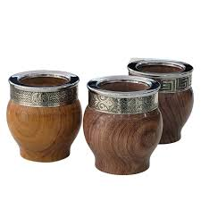

Mates de Madera
Los mates de madera son una pieza de artesanía pura. Torneados a mano con maderas nobles como el palo santo, el quebracho o el roble, cada uno es único e irrepetible. Con el tiempo y el uso correcto, la madera absorbe los sabores de la yerba y mejora notablemente el gusto del mate.
Características
- Torneados artesanalmente en maderas nobles
- Cada pieza es única e irrepetible
- Requiere curado especial con aceite
- Mejora su sabor con el uso y el tiempo
$55.000
Consultar disponibilidad